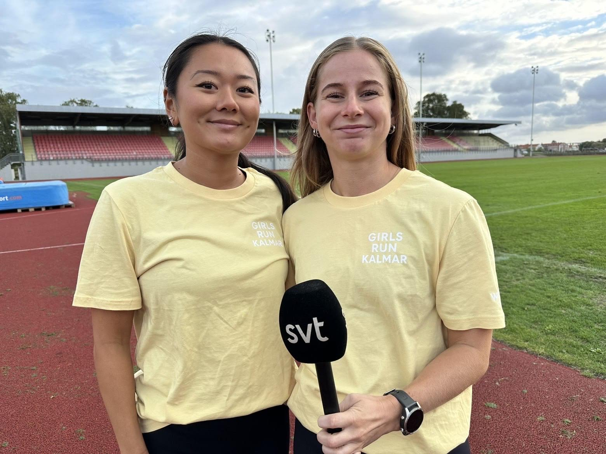

Run clubs i övriga landet
Hitta din run club utanför Stockholm och Göteborg — för alla nivåer och takter.
Senast uppdaterad:



Inbjudningar,
events och
promo runs.
Varje söndag får du en sammanställning av vad som händer kommande vecka — veckans pass, nyheter, intervjuer och events. Gratis så klart!
Gratis. Avsluta när du vill.
Frågor och svar
Run clubs utanför Stockholm och Göteborg är gratis att delta i. Du anmäler dig enkelt via Strava eller Instagram och dyker upp på startplatsen.
Run clubs i övriga landet tar emot alla — nybörjare som vill komma igång och erfarna löpare som vill ha sällskap.
Mötesplatsen varierar per stad och club — i Malmö samlas många kring Stortorget och Pildammsparken. Se varje clubs sida för exakt startplats.
De flesta run clubs kör återkommande veckopass. Frekvensen varierar — en till tre gånger i veckan är vanligt.